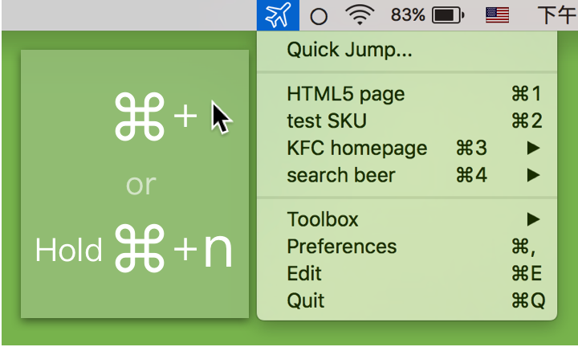
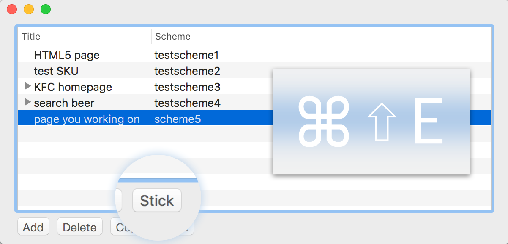

Generate QR-code Directly

Press and hold ⌘, then click scheme item you can get QR-code directly (or press ⌘ with item index, and hold ⌘ for a while)
Stick

Stick scheme of the page you are working on, then use hotkey to jump, faster than fast!
Edit QR-code Content
After scan QR-code on screen, you can press ⌘ and click Jump to show QR-code content in「Quick Jump...」for editing before jump or copy